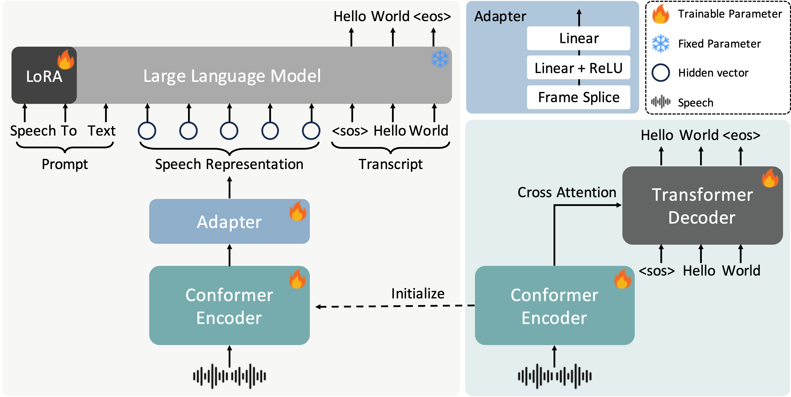
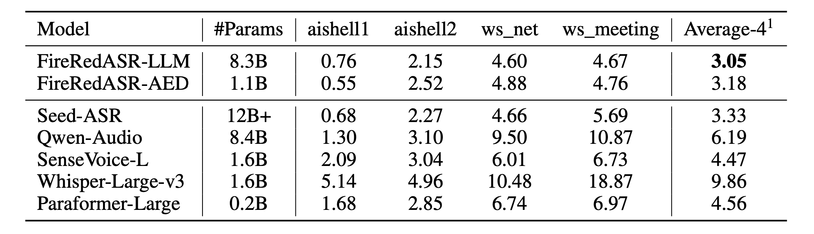
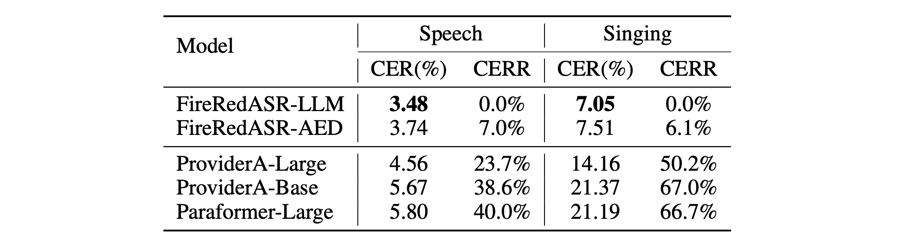
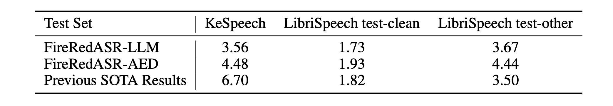

FireRedASR: Open-Source Industrial-Grade Mandarin Speech Recognition Models from Encoder-Decoder to LLM Integration
[Paper] [Code] [Huggingface Model]Abstract.We present FireRedASR, a family of large-scale automatic speech recognition (ASR) models for Mandarin, designed to meet diverse requirements in superior performance and optimal efficiency across various applications. FireRedASR comprises two variants:
FireRedASR-LLM: Designed to achieve state-of-the-art (SOTA) performance and to enable seamless end-to-end speech interaction. It adopts an Encoder-Adapter-LLM framework leveraging large language model (LLM) capabilities. On public Mandarin benchmarks, FireRedASR-LLM (8.3B parameters) achieves an average Character Error Rate (CER) of 3.05%, surpassing the latest SOTA of 3.33% with an 8.4% relative CER reduction (CERR). It demonstrates superior generalization capability over industrial-grade baselines, achieving 24%-40% CERR in multi-source Mandarin ASR scenarios such as video, live, and intelligent assistant.
FireRedASR-AED: Designed to balance high performance and computational efficiency and to serve as an effective speech representation module in LLM-based speech models. It utilizes an Attention-based Encoder-Decoder (AED) architecture. On public Mandarin benchmarks, FireRedASR-AED (1.1B parameters) achieves an average CER of 3.18%, slightly worse than FireRedASR-LLM but still outperforming the latest SOTA model with over 12B parameters. It offers a more compact size, making it suitable for resource-constrained applications.
Moreover, both models exhibit competitive results on Chinese dialects and English speech benchmarks and excel in singing lyrics recognition. To advance research in speech processing, we release our models and inference code at Link.Contents
System Overview

Figure 1. Architecture of FireRedASR-LLM (left), FireRedASR-AED (bottom right), and Adapter.
CER results on four public Mandarin ASR test sets

Table 1. Comparison of CER for FireRedASR-LLM, FireRedASR-AED and other released large ASR models on four public Mandarin ASR test sets.
CER and CERR on multi-source Mandarin speech and singing test sets

Table 2. Comparison of CER and relative CER reduction (CERR) for FireRedASR-LLM, FireRedASR-AED and baseline ASR models on multi-source Mandarin speech and singing test sets. CERR values are computed relative to FireRedASR-LLM performance.
CER and WER on Chinese dialect (KeSpeech) and English (LibriSpeech)

Table 3. Comparison of ASR performance on Chinese dialect (KeSpeech) and English (LibriSpeech) test sets. Results are reported in CER(%) for KeSpeech and WER(%) for Librispeech.